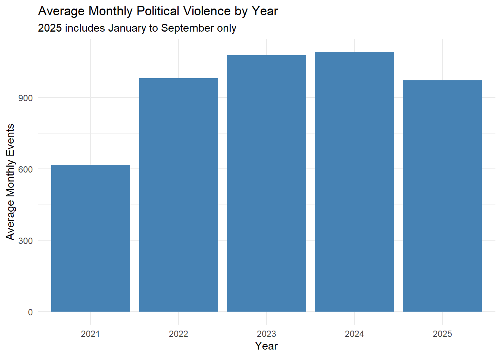
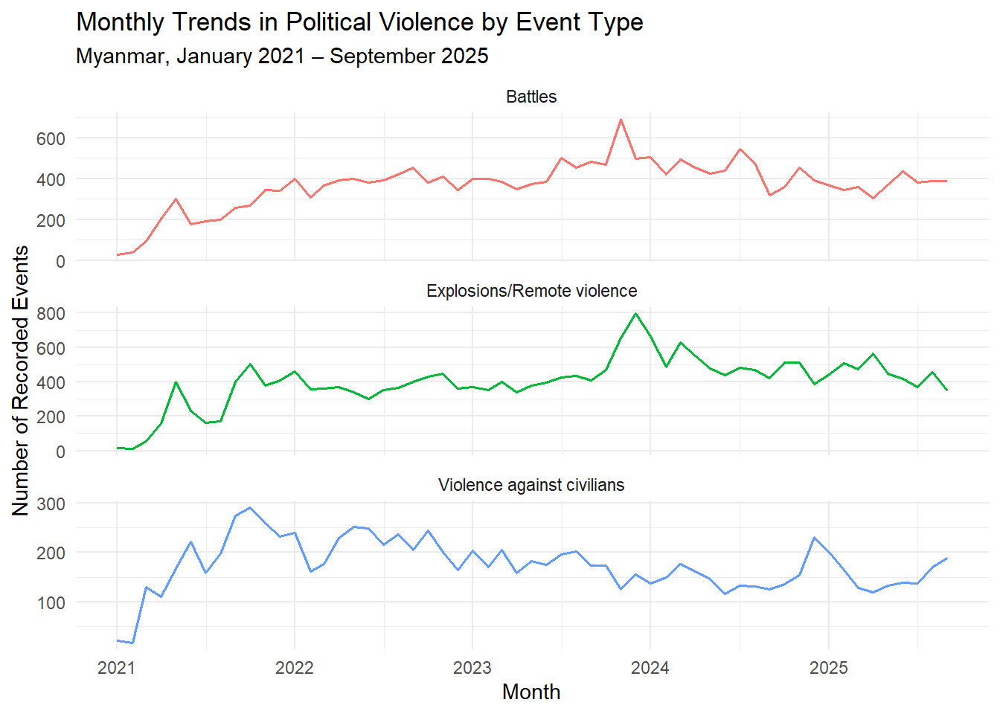
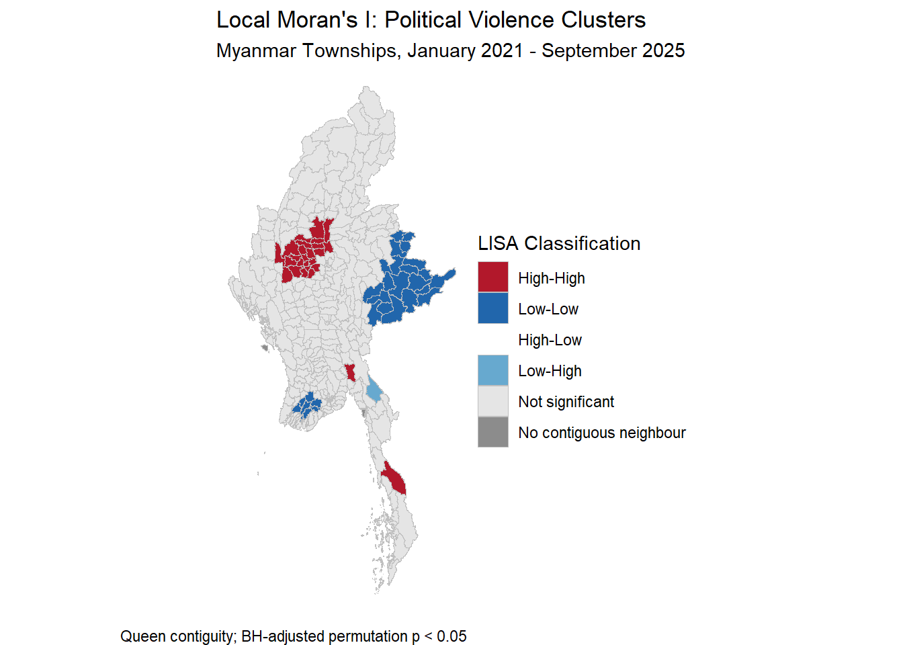
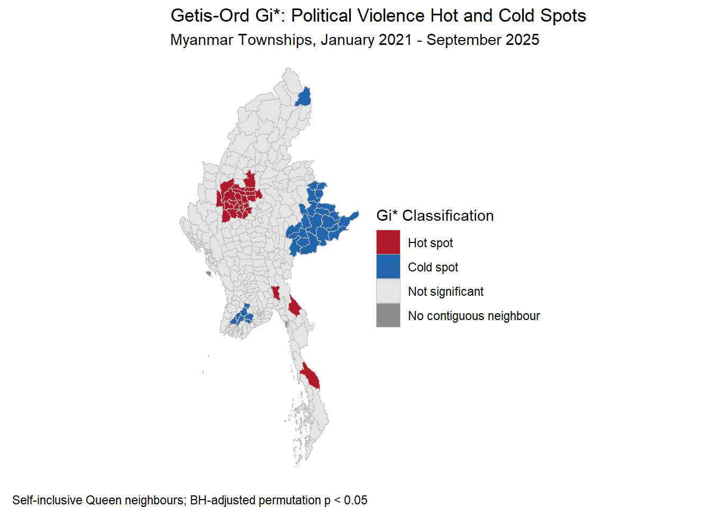
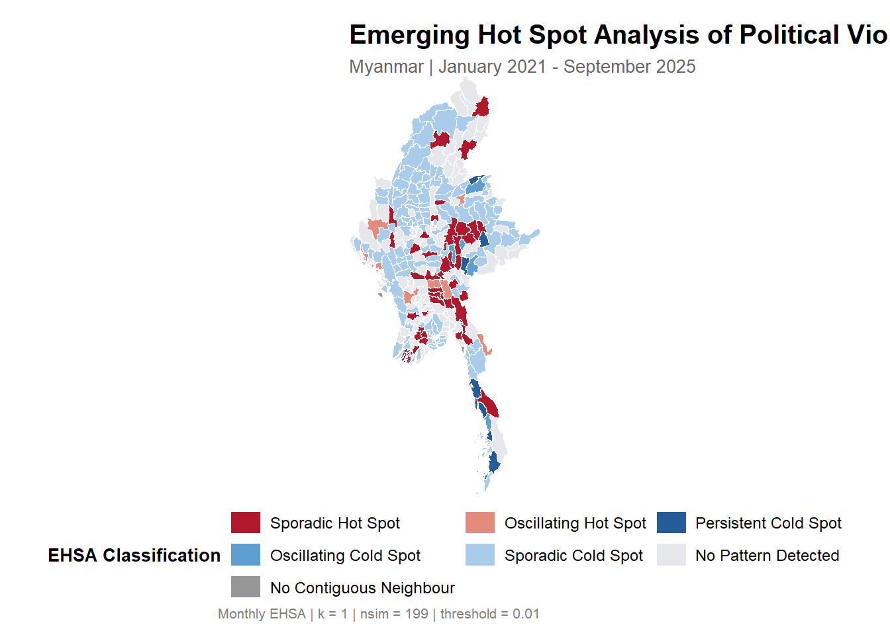
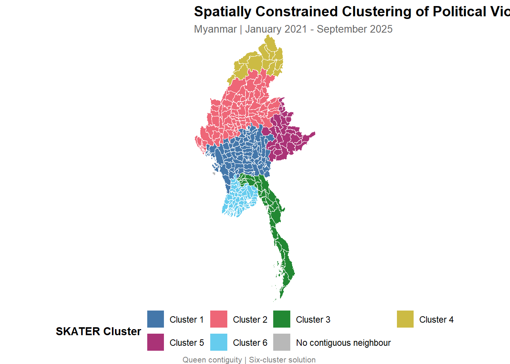
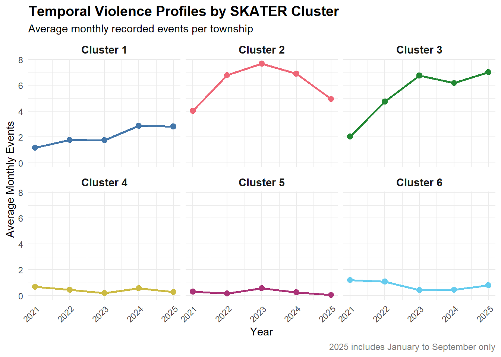

pacman::p_load(sf, sfdep, spdep, tidyverse, tmap, plotly, Kendall, knitr)Take-home Exercise 2 - Technical Report
1 Overview
This technical report examines the spatial and spatio-temporal patterns of political violence in Myanmar from January 2021 to September 2025. Using event-level data from the Armed Conflict Location & Event Data Project (ACLED) and township administrative boundaries from the Myanmar Information Management Unit (MIMU), the analysis is conducted at the township level to investigate how conflict events are distributed, clustered, and evolving across space and time.
The analytical framework consists of three complementary components. First, Local Measures of Spatial Association (LISA), including Local Moran’s I and Getis-Ord Gi*, are applied to identify statistically significant spatial clusters, hot spots, cold spots, and spatial outliers. Second, Emerging Hot Spot Analysis (EHSA) examines the evolution of spatial concentrations across monthly observations. Third, spatially constrained clustering is employed to identify geographically connected townships with similar historical patterns of recorded political violence.
Together, these approaches provide a more comprehensive understanding of where violence is concentrated, how these concentrations evolve over time, and how neighbouring townships can be grouped into meaningful geographical regions.
2 Introduction and Study Context
Myanmar has experienced decades of political instability and ethnic conflict, with longstanding tensions over political authority, ethnic autonomy, and territorial control. As documented by the Council on Foreign Relations (CFR), these conflicts have deep historical roots extending well before the military takeover in February 2021. Following the coup, armed resistance expanded across multiple states and regions, intensifying the country’s humanitarian and security challenges. By February 2025, more than 3.5 million people were estimated to be internally displaced, highlighting the scale of the ongoing humanitarian crisis (OCHA, 2025).
The conflict landscape has also become increasingly fragmented. An ACLED report on resistance groups in Myanmar highlights the complex relationships between established Ethnic Armed Organisations (EAOs) and newer resistance groups, including patterns of cooperation, competition, and territorial disputes. These dynamics differ across geographical areas, suggesting that political violence may exhibit distinct spatial concentrations and changing patterns over time.
However, political violence is not evenly distributed across Myanmar. The frequency and geographical concentration of recorded conflict events may vary substantially between townships and across different periods. National-level summaries may therefore conceal important localised patterns, while cumulative event counts alone may overlook emerging or changing concentrations of violence. Examining neighbouring townships and temporal variations can provide a more comprehensive understanding of these geographical differences.
Against this background, this study examines recorded political violence across Myanmar’s townships from January 2021 to September 2025. It applies Local Measures of Spatial Association (LISA and Getis-Ord Gi*) to identify significant spatial concentrations and outliers, Emerging Hot Spot Analysis (EHSA) to investigate their temporal evolution, and Spatially Constrained Clustering to identify geographically connected areas with similar historical violence patterns. By integrating these approaches, the study aims to provide a geographically informed perspective that can support conflict monitoring and humanitarian planning.
3 Research Questions and Objectives
3.1 Research Questions
This study aims to understand both the spatial concentration and temporal evolution of political violence across Myanmar at the township level. It addresses the following research questions:
Q1 — Concentration:
Where are significant spatial clusters, hot spots, cold spots, and spatial outliers of recorded political violence located across Myanmar townships?
Q2 — Spatio-temporal Evolution:
How have spatial concentrations of recorded political violence evolved between January 2021 and September 2025?
Q3 — Spatially Constrained Regional Patterns: Can geographically contiguous townships be grouped into meaningful regions based on similarities in their historical violence patterns?
Q4 — Practical Implications: How can the combined spatial, temporal, and regional findings support geographically informed conflict monitoring and humanitarian planning?
3.2 Research Objectives
To address these questions, the study aims to:
Identify spatial concentrations and anomalies of political violence using township-level spatial association and hot spot analysis.
Examine the evolution of conflict hot spots over time to distinguish temporary concentrations from persistent or changing patterns.
Integrate spatial and temporal findings to develop a clearer understanding of where political violence is concentrated and how these areas are changing.
Support geographic prioritisation and decision-making by identifying townships that may warrant closer monitoring or attention, providing spatial evidence that can inform conflict monitoring, humanitarian planning, resource prioritisation, and peace-building initiatives.
3.3 Practical Relevance
The practical value of this analysis lies not only in identifying where conflict events are concentrated, but also in distinguishing areas with different spatial and temporal trajectories. For example, a persistent hot spot may indicate a location requiring sustained monitoring, while an emerging or intensifying hot spot may signal an area where attention is becoming increasingly important. Conversely, diminishing hot spots may indicate changing conflict dynamics that warrant further investigation.
These insights can provide an evidence-based geographical perspective for organisations involved in conflict monitoring, humanitarian response, public safety, and peace-building. The analysis is intended to support prioritisation rather than predict individual conflict events or establish the causes of violence.
4 Data and Study Design
4.1 Data Sources
This study integrates two geospatial datasets. Political violence events are obtained from the ACLED (Armed Conflict Location & Event Data Project), which provides event-level information including event date, event type, geographic coordinates, administrative location, and reported fatalities. Township administrative boundaries are obtained from the MIMU (Myanmar Information Management Unit) administrative boundary dataset.
The ACLED dataset covers events recorded between 1 January 2021 and 30 September 2025, while the MIMU dataset provides the spatial boundaries of 330 townships across Myanmar.
4.2 Spatial and Temporal Units of Analysis
The township (ADM3) is selected as the primary spatial unit of analysis. Township-level analysis provides sufficient geographical detail to identify localised patterns while maintaining a consistent administrative unit that can support comparison across Myanmar.
The study covers 57 monthly periods between January 2021 and September 2025. Monthly aggregation is adopted to capture short-term fluctuations and longer-term changes in recorded political violence.
Since 2025 includes only nine months of observations, comparisons of annual event totals may be misleading. Therefore, average monthly event frequency is used for comparisons across years, while equivalent January–September observation windows are examined as an additional consistency check.
For the spatial clustering analysis, year-specific average monthly event frequencies are used to represent each township’s historical violence profile. For EHSA, the complete monthly panel is retained to investigate the evolution of local hot and cold spots.
4.3 Definition of Political Violence
This study operationalises political violence using the frequency of recorded conflict events rather than their severity or reported fatalities.
The primary measure includes three ACLED event types: Battles, Explosions/Remote violence, and Violence against civilians. Each recorded event contributes equally to the event count.
The event_type classification is selected as the primary analytical level, focusing on Battles, Explosions/Remote violence, and Violence against civilians.
The broader disorder_type classification is reviewed descriptively to assess differences in event coverage. However, the spatial analyses are conducted using the selected event_type definition only.
Accordingly, the term “violence level” in this report refers to recorded political violence event frequency, rather than a direct measure of casualties, severity, or population-level risk.
4.4 Study Design
The study adopts an observational geospatial and spatio-temporal analytical design. It examines recorded patterns of political violence rather than attempting to establish causal relationships between conflict and external socioeconomic or political factors.
The analytical design combines three perspectives. First, LISA and Getis-Ord Gi* identify spatial concentrations and outliers across the study period. Second, EHSA examines changes in local hot and cold spot patterns using monthly observations. Third, SKATER groups geographically connected townships with similar historical violence profiles.
Together, these approaches provide complementary insights into spatial concentration, temporal behaviour, and regional similarity.
5 Loading Necessary R Packages
| Package | Purpose |
|---|---|
| sf | Spatial data handling |
| sfdep | Spatial dependence and hot spot analysis |
| spdep | Spatial neighbours, weights and constrained clustering |
| tidyverse | Data wrangling and visualisation |
| tmap | Thematic mapping |
| plotly | Interactive visualisation |
| Kendall | Mann-Kendall trend analysis |
| knitr | Table formatting |
6 Data preparation and quality assessment
6.1 Data Import
acled_raw <- read_csv("take-home_ex2_data/ACLED_Data_Myanmar_Jan2021-Sep2025.csv")
township_raw <- st_read("take-home_ex2_data/geonode-mmr_polbnda_adm3_250k_mimu_1.kml")Reading layer `geonode:mmr_polbnda_adm3_250k_mimu_1' from data source
`C:\Users\jiayi\Documents\SMU\26_Aug_Term\GAA\lw0170_GAA\ISSS626_course\take-home_exercise\take-home_ex2_data\geonode-mmr_polbnda_adm3_250k_mimu_1.kml'
using driver `KML'
Simple feature collection with 330 features and 2 fields
Geometry type: GEOMETRYCOLLECTION
Dimension: XY
Bounding box: xmin: 92.1721 ymin: 9.605884 xmax: 101.17 ymax: 28.54554
Geodetic CRS: WGS 846.2 Check Data Quality
dim(acled_raw)
names(acled_raw)
dim(township_raw)
names(township_raw)
st_crs(township_raw)
st_geometry_type(township_raw)6.2.1 Duplicate Check
acled_raw %>%
summarise(
total_records = n(),
unique_event_ids = n_distinct(event_id_cnty),
start_date = min(as.Date(event_date)),
end_date = max(as.Date(event_date))
)# A tibble: 1 × 4
total_records unique_event_ids start_date end_date
<int> <int> <date> <date>
1 87109 87109 2021-01-01 2025-09-30The ACLED dataset contained 87,109 event records covering the intended study period from January 2021 to September 2025. All event identifiers were unique, indicating no duplicated event records based on event_id_cnty.
6.2.2 Country Coverage Check
acled_raw %>%
count(country, sort = TRUE)# A tibble: 2 × 2
country n
<chr> <int>
1 Myanmar 87103
2 Indian Ocean 6acled_mm <- acled_raw %>%
filter(country == "Myanmar")Although the dataset was extracted for Myanmar, six records were coded under the Indian Ocean. These observations were excluded to maintain consistency with the defined study area.
6.2.3 Missing Values Check
acled_mm %>%
summarise(
missing_event_date = sum(is.na(event_date)),
missing_event_type = sum(is.na(event_type)),
missing_admin3 = sum(is.na(admin3)),
missing_latitude = sum(is.na(latitude)),
missing_longitude = sum(is.na(longitude)),
missing_geo_precision = sum(is.na(geo_precision)),
missing_fatalities = sum(is.na(fatalities))
)# A tibble: 1 × 7
missing_event_date missing_event_type missing_admin3 missing_latitude
<int> <int> <int> <int>
1 0 0 1112 0
# ℹ 3 more variables: missing_longitude <int>, missing_geo_precision <int>,
# missing_fatalities <int>Missing values were observed in the ACLED admin3 field. However, township assignment in this study was based on the geographic coordinates of each event and the MIMU township polygons rather than relying solely on ACLED administrative labels. Therefore, missing admin3 values did not automatically result in record exclusion.
6.2.4 Geo-precision Quality Assessment
acled_mm %>%
count(geo_precision) %>%
mutate(percentage = n / sum(n) * 100)# A tibble: 3 × 3
geo_precision n percentage
<dbl> <int> <dbl>
1 1 49261 56.6
2 2 37460 43.0
3 3 382 0.439ACLED records include a geographic precision indicator reflecting the level of certainty associated with each event location. While a substantial proportion of events were coded with the highest geographic precision, a considerable number were assigned lower precision levels. Excluding all lower-precision observations would remove a large proportion of the available conflict records and could introduce additional selection bias.
Therefore, all eligible political violence events were retained for the primary analysis. Geographic precision is instead treated as an important data limitation, and the robustness of key spatial findings may be evaluated using higher-precision observations as a sensitivity check.
6.3 Prepare Political Violence Events
political_violence <- acled_mm %>%
filter(
event_type %in% c(
"Battles",
"Explosions/Remote violence",
"Violence against civilians"
)
) %>%
mutate(
event_date = as.Date(event_date),
month = floor_date(event_date, unit = "month")
)
political_violence %>%
count(event_type, sort = TRUE)# A tibble: 3 × 2
event_type n
<chr> <int>
1 Explosions/Remote violence 22925
2 Battles 21121
3 Violence against civilians 9954political_violence %>%
count(event_type, sub_event_type, sort = TRUE) %>%
knitr::kable(
caption = "Composition of Recorded Political Violence"
)| event_type | sub_event_type | n |
|---|---|---|
| Battles | Armed clash | 20747 |
| Explosions/Remote violence | Air/drone strike | 7918 |
| Explosions/Remote violence | Remote explosive/landmine/IED | 7644 |
| Violence against civilians | Attack | 7521 |
| Explosions/Remote violence | Shelling/artillery/missile attack | 6801 |
| Violence against civilians | Abduction/forced disappearance | 2322 |
| Explosions/Remote violence | Grenade | 557 |
| Battles | Non-state actor overtakes territory | 350 |
| Violence against civilians | Sexual violence | 111 |
| Battles | Government regains territory | 24 |
| Explosions/Remote violence | Chemical weapon | 3 |
| Explosions/Remote violence | Suicide bomb | 2 |
acled_mm %>%
filter(str_detect(disorder_type, "Political violence")) %>%
count(event_type, sub_event_type, sort = TRUE)# A tibble: 14 × 3
event_type sub_event_type n
<chr> <chr> <int>
1 Battles Armed clash 20747
2 Explosions/Remote violence Air/drone strike 7918
3 Explosions/Remote violence Remote explosive/landmine/IED 7644
4 Violence against civilians Attack 7521
5 Explosions/Remote violence Shelling/artillery/missile attack 6801
6 Violence against civilians Abduction/forced disappearance 2322
7 Explosions/Remote violence Grenade 557
8 Battles Non-state actor overtakes territory 350
9 Protests Excessive force against protesters 261
10 Violence against civilians Sexual violence 111
11 Battles Government regains territory 24
12 Riots Mob violence 23
13 Explosions/Remote violence Chemical weapon 3
14 Explosions/Remote violence Suicide bomb 26.4 Prepare MIMU Township Boundary
extract_field <- function(x, field) {
pattern <- paste0(
'<span class="atr-name">',
field,
'</span>:</strong>\\s*',
'<span class="atr-value">([^<]+)'
)
str_match(x, pattern)[, 2]
}township <- township_raw %>%
mutate(
ST = extract_field(Description, "ST"),
ST_PCODE = extract_field(Description, "ST_PCODE"),
DT = extract_field(Description, "DT"),
DT_PCODE = extract_field(Description, "DT_PCODE"),
TS = extract_field(Description, "TS"),
TS_PCODE = extract_field(Description, "TS_PCODE"),
PCode_V = extract_field(Description, "PCode_V")
) %>%
select(
ST,
ST_PCODE,
DT,
DT_PCODE,
TS,
TS_PCODE,
PCode_V,
geometry
)6.5 Fix GeometryCollection
stopifnot(nrow(township) == 330)
get_polygon_parts <- function(g) {
if (inherits(g, "POLYGON")) {
return(list(unclass(g)))
}
if (inherits(g, "MULTIPOLYGON")) {
return(unclass(g))
}
if (inherits(g, "GEOMETRYCOLLECTION")) {
parts <- lapply(
unclass(g),
get_polygon_parts
)
return(do.call(c, parts))
}
return(list())
}
polygon_parts <- lapply(st_geometry(township), get_polygon_parts)
stopifnot(
length(polygon_parts) == 330,
all(lengths(polygon_parts) > 0)
)
polygon_geometries <- lapply(polygon_parts, sf::st_multipolygon)
st_geometry(township) <- st_sfc(
polygon_geometries,
crs = st_crs(township)
)
township <- st_make_valid(township)
stopifnot(
nrow(township) == 330,
n_distinct(township$TS_PCODE) == 330,
all(st_is_valid(township)),
!any(st_is_empty(township))
)geometry_check <- tibble(
Check = c(
"Total townships",
"Unique TS_PCODE",
"Duplicate TS_PCODE",
"Invalid geometries",
"Empty geometries"
),
Result = c(
nrow(township),
n_distinct(township$TS_PCODE),
sum(duplicated(township$TS_PCODE)),
sum(!st_is_valid(township)),
sum(st_is_empty(township))
)
)
knitr::kable(
geometry_check,
caption = "MIMU Geometry Validation"
)| Check | Result |
|---|---|
| Total townships | 330 |
| Unique TS_PCODE | 330 |
| Duplicate TS_PCODE | 0 |
| Invalid geometries | 0 |
| Empty geometries | 0 |
table(st_geometry_type(township))
GEOMETRY POINT LINESTRING POLYGON
0 0 0 0
MULTIPOINT MULTILINESTRING MULTIPOLYGON GEOMETRYCOLLECTION
0 0 330 0
CIRCULARSTRING COMPOUNDCURVE CURVEPOLYGON MULTICURVE
0 0 0 0
MULTISURFACE CURVE SURFACE POLYHEDRALSURFACE
0 0 0 0
TIN TRIANGLE
0 0 The original MIMU KML contained 330 township features stored as GeometryCollections, including 41 features with nested polygon geometries. A recursive extraction approach was applied to retain all polygon components while removing non-spatial-boundary elements such as points. The extracted geometries were standardised into MultiPolygon format, followed by geometry validity and township identifier checks to ensure data completeness before spatial analysis.
6.6 Convert ACLED Events into Spatial Points
political_violence_sf <- political_violence %>%
st_as_sf(
coords = c("longitude", "latitude"),
crs = 4326,
remove = FALSE
)st_crs(political_violence_sf)Coordinate Reference System:
User input: EPSG:4326
wkt:
GEOGCRS["WGS 84",
ENSEMBLE["World Geodetic System 1984 ensemble",
MEMBER["World Geodetic System 1984 (Transit)"],
MEMBER["World Geodetic System 1984 (G730)"],
MEMBER["World Geodetic System 1984 (G873)"],
MEMBER["World Geodetic System 1984 (G1150)"],
MEMBER["World Geodetic System 1984 (G1674)"],
MEMBER["World Geodetic System 1984 (G1762)"],
MEMBER["World Geodetic System 1984 (G2139)"],
MEMBER["World Geodetic System 1984 (G2296)"],
ELLIPSOID["WGS 84",6378137,298.257223563,
LENGTHUNIT["metre",1]],
ENSEMBLEACCURACY[2.0]],
PRIMEM["Greenwich",0,
ANGLEUNIT["degree",0.0174532925199433]],
CS[ellipsoidal,2],
AXIS["geodetic latitude (Lat)",north,
ORDER[1],
ANGLEUNIT["degree",0.0174532925199433]],
AXIS["geodetic longitude (Lon)",east,
ORDER[2],
ANGLEUNIT["degree",0.0174532925199433]],
USAGE[
SCOPE["Horizontal component of 3D system."],
AREA["World."],
BBOX[-90,-180,90,180]],
ID["EPSG",4326]]st_crs(township)Coordinate Reference System:
User input: WGS 84
wkt:
GEOGCRS["WGS 84",
DATUM["World Geodetic System 1984",
ELLIPSOID["WGS 84",6378137,298.257223563,
LENGTHUNIT["metre",1]]],
PRIMEM["Greenwich",0,
ANGLEUNIT["degree",0.0174532925199433]],
CS[ellipsoidal,2],
AXIS["geodetic latitude (Lat)",north,
ORDER[1],
ANGLEUNIT["degree",0.0174532925199433]],
AXIS["geodetic longitude (Lon)",east,
ORDER[2],
ANGLEUNIT["degree",0.0174532925199433]],
ID["EPSG",4326]]6.7 Spatial Join
violence_joined <- st_join(
political_violence_sf,
township %>%
select(TS_PCODE, TS, ST),
join = st_intersects,
left = TRUE
)
violence_joined %>%
st_drop_geometry() %>%
summarise(
total_events = n(),
matched_events = sum(!is.na(TS_PCODE)),
unmatched_events = sum(is.na(TS_PCODE)),
match_rate = matched_events / total_events * 100
)# A tibble: 1 × 4
total_events matched_events unmatched_events match_rate
<int> <int> <int> <dbl>
1 54000 53992 8 100.06.8 Unmatached Events
unmatched_events <- violence_joined %>%
filter(is.na(TS_PCODE)) %>%
st_drop_geometry() %>%
select(
event_id_cnty,
event_date,
event_type,
admin1,
admin2,
admin3,
location,
latitude,
longitude,
geo_precision
)
unmatched_events# A tibble: 8 × 10
event_id_cnty event_date event_type admin1 admin2 admin3 location latitude
<chr> <date> <chr> <chr> <chr> <chr> <chr> <dbl>
1 MMR23873 2021-03-22 Violence agai… Rakhi… Maung… Buthi… Wa Ra K… 20.8
2 MMR46749 2023-03-27 Battles Tanin… Kawth… Bokpy… Ma Thay 10.7
3 MMR47940 2023-05-11 Battles Kayin Myawa… Myawa… Me Ka L… 16.3
4 MMR47776 2023-05-12 Battles Kayin Myawa… Myawa… Me Ka L… 16.3
5 MMR47777 2023-05-13 Battles Kayin Myawa… Myawa… Me Ka L… 16.3
6 MMR52025 2023-08-31 Violence agai… Tanin… Myeik Kyunsu Kawt Ka… 11.8
7 MMR52859 2023-09-21 Violence agai… Rakhi… Maung… Buthi… Wa Ra K… 20.8
8 MMR90747 2025-04-05 Violence agai… Rakhi… Sittwe Paukt… Ku La T… 19.9
# ℹ 2 more variables: longitude <dbl>, geo_precision <dbl>Eight eligible political violence events could not be assigned to a MIMU township polygon through coordinate-based spatial matching. Given their negligible proportion of the analytical dataset, these observations were excluded from township-level analysis but documented as part of the spatial data quality assessment.
violence_matched <- violence_joined %>%
filter(!is.na(TS_PCODE))6.9 Summary
quality_summary <- tibble(
`Quality Check` = c(
"Raw ACLED records",
"Unique event IDs",
"Myanmar records",
"Political violence records retained",
"Missing coordinates",
"Township boundary features",
"Unique township PCodes",
"Invalid township geometries",
"Spatially matched political violence events",
"Unmatched political violence events"
),
Result = c(
nrow(acled_raw),
n_distinct(acled_raw$event_id_cnty),
nrow(acled_mm),
nrow(political_violence),
sum(
is.na(acled_mm$latitude) |
is.na(acled_mm$longitude)
),
nrow(township),
n_distinct(township$TS_PCODE),
sum(!st_is_valid(township)),
sum(!is.na(violence_joined$TS_PCODE)),
sum(is.na(violence_joined$TS_PCODE))
)
)
knitr::kable(
quality_summary,
caption = "Summary of Data Quality Assessment"
)| Quality Check | Result |
|---|---|
| Raw ACLED records | 87109 |
| Unique event IDs | 87109 |
| Myanmar records | 87103 |
| Political violence records retained | 54000 |
| Missing coordinates | 0 |
| Township boundary features | 330 |
| Unique township PCodes | 330 |
| Invalid township geometries | 0 |
| Spatially matched political violence events | 53992 |
| Unmatched political violence events | 8 |
6.10 Prepare Analysis-ready Spatial Dataset
violence_township <- violence_matched %>%
st_drop_geometry() %>%
count(
TS_PCODE,
name = "violent_events"
)
township_analysis <- township %>%
left_join(
violence_township,
by = "TS_PCODE"
) %>%
mutate(
violent_events = replace_na(
violent_events,
0
)
)nrow(township_analysis)[1] 330sum(is.na(township_analysis$violent_events))[1] 06.11 Prepare Complete Township-Month Panel
violence_monthly <- violence_matched %>%
st_drop_geometry() %>%
count(
TS_PCODE,
month,
name = "violent_events"
)
all_months <- seq(
from = as.Date("2021-01-01"),
to = as.Date("2025-09-01"),
by = "month"
)
township_monthly <- expand_grid(
TS_PCODE = township$TS_PCODE,
month = all_months
) %>%
left_join(
violence_monthly,
by = c("TS_PCODE", "month")
) %>%
mutate(
violent_events = replace_na(
violent_events,
0
)
)
nrow(township_monthly)[1] 188106.12 Final Check
6.12.1 Check township_analysis Data
nrow(township_analysis)[1] 330n_distinct(township_analysis$TS_PCODE)[1] 330sum(is.na(township_analysis$violent_events))[1] 0sum(township_analysis$violent_events)[1] 53992township_analysis %>%
st_drop_geometry() %>%
summarise(
min_events = min(violent_events),
max_events = max(violent_events),
mean_events = mean(violent_events),
median_events = median(violent_events),
zero_event_townships = sum(violent_events == 0)
) min_events max_events mean_events median_events zero_event_townships
1 0 1048 163.6121 79 86.12.2 Check township_monthly Data
nrow(township_monthly)[1] 18810n_distinct(township_monthly$TS_PCODE)[1] 330n_distinct(township_monthly$month)[1] 57sum(is.na(township_monthly$violent_events))[1] 0township_monthly %>%
count(TS_PCODE, month) %>%
filter(n > 1)# A tibble: 0 × 3
# ℹ 3 variables: TS_PCODE <chr>, month <date>, n <int>sum(township_monthly$violent_events)[1] 53992The final cross-sectional dataset contained 330 unique townships with no missing event-count values. Township-month aggregation produced a complete panel of 18,810 observations, representing 330 townships across 57 monthly periods from January 2021 to September 2025. Zero-event township-month combinations were retained as valid zero observations rather than treated as missing values.
The total number of events remained consistent after township and monthly aggregation, confirming that no additional event records were lost or duplicated during data restructuring.
violence_joined %>%
st_drop_geometry() %>%
summarise(
total_events = n(),
matched_events = sum(!is.na(TS_PCODE)),
unmatched_events = sum(is.na(TS_PCODE)),
match_rate = matched_events / total_events * 100
)# A tibble: 1 × 4
total_events matched_events unmatched_events match_rate
<int> <int> <int> <dbl>
1 54000 53992 8 100.0nrow(township)[1] 330n_distinct(township$TS_PCODE)[1] 3307 Exploratory and Temporal Analysis
7.1 Create Annual Trend
annual_summary <- township_monthly %>%
mutate(year = lubridate::year(month)) %>%
group_by(year) %>%
summarise(
total_events = sum(violent_events),
observed_months = n_distinct(month),
.groups = "drop"
) %>%
mutate(
avg_monthly_events = total_events / observed_months
)
knitr::kable(
annual_summary,
digits = 2,
caption = "Annual Political Violence Frequency"
)| year | total_events | observed_months | avg_monthly_events |
|---|---|---|---|
| 2021 | 7410 | 12 | 617.50 |
| 2022 | 11776 | 12 | 981.33 |
| 2023 | 12947 | 12 | 1078.92 |
| 2024 | 13110 | 12 | 1092.50 |
| 2025 | 8749 | 9 | 972.11 |
ggplot(
annual_summary,
aes(x = factor(year), y = avg_monthly_events)
) +
geom_col(fill = "steelblue") +
labs(
title = "Average Monthly Political Violence by Year",
subtitle = "2025 includes January to September only",
x = "Year",
y = "Average Monthly Events"
) +
theme_minimal()
7.2 Same-Month Annual Comparison
same_month_comparison <- township_monthly %>%
filter(lubridate::month(month) <= 9) %>%
mutate(year = lubridate::year(month)) %>%
group_by(year) %>%
summarise(
events = sum(violent_events),
observed_months = n_distinct(month),
.groups = "drop"
) %>%
mutate(
monthly_average = events / observed_months
)
knitr::kable(same_month_comparison, digits = 2)| year | events | observed_months | monthly_average |
|---|---|---|---|
| 2021 | 4387 | 9 | 487.44 |
| 2022 | 8785 | 9 | 976.11 |
| 2023 | 8913 | 9 | 990.33 |
| 2024 | 9975 | 9 | 1108.33 |
| 2025 | 8749 | 9 | 972.11 |
7.3 Monthly Trend by Event Type
monthly_by_type <- violence_matched %>%
st_drop_geometry() %>%
count(month, event_type)
ggplot(
monthly_by_type,
aes(x = month, y = n, color = event_type)
) +
geom_line(linewidth = 0.65) +
facet_wrap(
~event_type,
ncol = 1,
scales = "free_y"
) +
labs(
title = "Monthly Trends in Political Violence by Event Type",
subtitle = "Myanmar, January 2021 – September 2025",
x = "Month",
y = "Number of Recorded Events",
color = "Event Type"
) +
theme_minimal() +
theme(legend.position = "none")
Battles and Explosions/Remote violence generally increased after 2021, with notable peaks around late 2023 and early 2024. In contrast, Violence against civilians reached relatively high levels during 2021–2022 before generally declining in later years.
These differences suggest that the three event types followed distinct temporal patterns, highlighting the importance of examining violence composition rather than relying solely on overall event counts.
8 Spatial Neighbourhood and Weights
original_s2 <- sf::sf_use_s2()
sf::sf_use_s2(FALSE)
queen_nb <- spdep::poly2nb(
township_analysis,
queen = TRUE
)
table(spdep::card(queen_nb))
0 1 2 3 4 5 6 7 8 9 10 11
3 4 13 39 53 85 56 43 18 10 5 1 components <- spdep::n.comp.nb(queen_nb)
components$nc[1] 4sum(spdep::card(queen_nb) == 0)[1] 3sf::sf_use_s2(original_s2)queen_w <- spdep::nb2listw(
queen_nb,
style = "W",
zero.policy = TRUE
)
township_analysis <- township_analysis %>%
mutate(
monthly_rate = violent_events / 57,
neighbour_avg = spdep::lag.listw(
queen_w,
monthly_rate,
zero.policy = TRUE
)
)
township_analysis$neighbour_avg[spdep::card(queen_nb) == 0] <- NA_real_9 Analytical assumptions and methodological decisions
The following table summarises the key methodological decisions adopted for the spatial and spatio-temporal analyses. These choices aim to ensure consistency, statistical interpretability, and appropriate treatment of geographical constraints.
method_table <- data.frame(
Aspect = c(
"Analytical variable",
"Spatial neighbourhood",
"Spatial weights",
"Isolated townships",
"Statistical significance",
"Temporal analysis",
"Spatially constrained clustering"
),
Decision = c(
"Log-transformed mean monthly event frequency (log1p) for LISA and Gi*",
"Queen contiguity (shared boundary or vertex)",
"Row-standardised weights for LISA; self-inclusive weights for Gi*",
"Three isolated townships are excluded from neighbour-based analysis but retained in the final maps",
"999 permutations and BH-adjusted p < 0.05 for LISA and Gi*",
"57 monthly observations; EHSA with k = 1 and 199 simulations",
"SKATER applied to the main connected component (327 townships), using annual average monthly event frequencies and event persistence"
)
)
knitr::kable(
method_table,
caption = "Analytical Assumptions and Methodological Decisions",
align = c("l", "l")
)| Aspect | Decision |
|---|---|
| Analytical variable | Log-transformed mean monthly event frequency (log1p) for LISA and Gi* |
| Spatial neighbourhood | Queen contiguity (shared boundary or vertex) |
| Spatial weights | Row-standardised weights for LISA; self-inclusive weights for Gi* |
| Isolated townships | Three isolated townships are excluded from neighbour-based analysis but retained in the final maps |
| Statistical significance | 999 permutations and BH-adjusted p < 0.05 for LISA and Gi* |
| Temporal analysis | 57 monthly observations; EHSA with k = 1 and 199 simulations |
| Spatially constrained clustering | SKATER applied to the main connected component (327 townships), using annual average monthly event frequencies and event persistence |
10 Local Measures of Spatial Association (LSMA) analysis
10.1 Analysis Preparation
Local spatial association is examined using the logarithm of average monthly political violence event frequency (log1p). This transformation reduces the influence of exceptionally high event counts while preserving differences between townships.
Queen contiguity is used to define spatial neighbours. Townships without contiguous neighbours are excluded from local spatial tests and retained separately in the final maps. The analysis uses 999 conditional permutations, with statistical significance assessed at the 5% level after Benjamini–Hochberg adjustment.
event_col <- if ("violent_events" %in% names(township_analysis)) {
"violent_events"
} else if ("total_events" %in% names(township_analysis)) {
"total_events"
} else {
stop("Event-count column not found.")
}
township_analysis <- township_analysis %>%
mutate(
monthly_rate = .data[[event_col]] / 57,
log_monthly_rate = log1p(monthly_rate)
)
has_neighbour <- spdep::card(queen_nb) > 0
lisa_data <- township_analysis[has_neighbour, ]
nb_lisa <- subset(queen_nb, subset = has_neighbour)
wt_lisa <- sfdep::st_weights(nb_lisa, style = "W")
stopifnot(
nrow(township_analysis) == length(queen_nb),
nrow(lisa_data) == length(nb_lisa),
all(spdep::card(nb_lisa) > 0)
)
analysis_summary <- data.frame(
Category = c(
"Total townships",
"Included in spatial tests",
"Isolated townships"
),
Count = c(
nrow(township_analysis),
sum(has_neighbour),
sum(!has_neighbour)
)
)
knitr::kable(
analysis_summary,
caption = "Spatial Analysis Sample"
)| Category | Count |
|---|---|
| Total townships | 330 |
| Included in spatial tests | 327 |
| Isolated townships | 3 |
10.2 Local Moran’s I (LISA)
Local Moran’s I is applied to identify statistically significant local spatial associations in recorded political violence frequency. The analysis distinguishes High–High (HH) and Low–Low (LL) spatial clusters from High–Low (HL) and Low–High (LH) spatial outliers.
Spatial lag values are calculated using row-standardised Queen contiguity weights. Permutation-based p-values are adjusted using the Benjamini–Hochberg procedure to reduce the risk of false discoveries arising from multiple local tests.
x <- lisa_data$log_monthly_rate
set.seed(1234)
lisa_stats <- sfdep::local_moran(
x,
nb_lisa,
wt_lisa,
nsim = 999,
alternative = "two.sided"
)
head(lisa_stats) ii eii var_ii z_ii p_ii p_ii_sim
1 0.50913579 0.0131886268 0.0987199256 1.5784579 0.11446046 0.078
2 0.29068513 0.0200080461 0.0924292441 0.8903213 0.37329337 0.366
3 0.50350943 -0.0222248404 0.1840423696 1.2254833 0.22039320 0.228
4 0.01091676 0.0002404174 0.0002130784 0.7313961 0.46453727 0.500
5 0.27701396 -0.0226023648 0.1981308915 0.6731152 0.50087403 0.508
6 0.76901213 -0.0321889280 0.2319074098 1.6637352 0.09616536 0.082
p_folded_sim skewness kurtosis mean median pysal
1 0.039 -0.1784980 -0.38334881 Low-Low Low-Low Low-Low
2 0.183 -0.3168717 -0.06243209 Low-Low Low-Low Low-Low
3 0.114 -0.2271229 -0.17065007 Low-Low Low-Low Low-Low
4 0.250 -0.2438391 -0.26289828 Low-Low High-Low Low-Low
5 0.254 -0.3220554 0.06978079 Low-Low Low-Low Low-Low
6 0.041 -0.2532984 -0.24686860 Low-Low Low-Low Low-Low10.2.1 LISA Classification
listw_lisa <- spdep::nb2listw(nb_lisa, style = "W")
z <- as.numeric(scale(x))
lag_z <- spdep::lag.listw(listw_lisa, z)
lisa_data <- lisa_data %>%
mutate(
local_I = lisa_stats$ii,
lisa_p_raw = lisa_stats$p_ii_sim,
lisa_p_bh = p.adjust(
lisa_p_raw,
method = "BH"
),
LISA_quadrant = case_when(
z >= 0 & lag_z >= 0 ~ "High-High",
z < 0 & lag_z < 0 ~ "Low-Low",
z >= 0 & lag_z < 0 ~ "High-Low",
TRUE ~ "Low-High"
),
LISA_class = case_when(
!is.na(lisa_p_bh) & lisa_p_bh < 0.05 ~ LISA_quadrant,
TRUE ~ "Not significant"
)
)
lisa_data %>%
st_drop_geometry() %>%
count(LISA_class, sort = TRUE) %>%
knitr::kable(
caption = "Local Moran's I Classification"
)| LISA_class | n |
|---|---|
| Not significant | 271 |
| Low-Low | 29 |
| High-High | 26 |
| Low-High | 1 |
10.2.2 LISA Cluster Map
lisa_map <- township_analysis %>%
left_join(
lisa_data %>%
st_drop_geometry() %>%
select(
TS_PCODE,
local_I,
lisa_p_raw,
lisa_p_bh,
LISA_class
),
by = "TS_PCODE"
) %>%
mutate(
LISA_class = replace_na(
LISA_class,
"No contiguous neighbour"
)
)
lisa_map <- lisa_map %>%
mutate(
LISA_class = factor(
LISA_class,
levels = c(
"High-High",
"Low-Low",
"High-Low",
"Low-High",
"Not significant",
"No contiguous neighbour"
)
)
)
ggplot(lisa_map) +
geom_sf(
aes(fill = LISA_class),
color = "grey75",
linewidth = 0.12
) +
scale_fill_manual(
values = c(
"High-High" = "#B2182B",
"Low-Low" = "#2166AC",
"High-Low" = "#EF8A62",
"Low-High" = "#67A9CF",
"Not significant" = "grey90",
"No contiguous neighbour" = "grey55"
),
drop = FALSE
) +
labs(
title = "Local Moran's I: Political Violence Clusters",
subtitle = "Myanmar Townships, January 2021 - September 2025",
fill = "LISA Classification",
caption = "Queen contiguity; BH-adjusted permutation p < 0.05"
) +
theme_void()
10.2.3 LISA Summary Table
lisa_summary <- lisa_map %>%
st_drop_geometry() %>%
count(LISA_class, name = "Townships") %>%
mutate(
Percentage = round(
Townships / sum(Townships) * 100,
2
)
)
knitr::kable(
lisa_summary,
caption = "Distribution of LISA Classifications",
digits = 2
)| LISA_class | Townships | Percentage |
|---|---|---|
| High-High | 26 | 7.88 |
| Low-Low | 29 | 8.79 |
| Low-High | 1 | 0.30 |
| Not significant | 271 | 82.12 |
| No contiguous neighbour | 3 | 0.91 |
10.3 Getis-Ord Gi* Hot and Cold Spot Analysis
Getis-Ord Gi* is employed to identify statistically significant geographical concentrations of high and low political violence event frequencies. Unlike Local Moran’s I, which also identifies spatial outliers, Gi* focuses on the concentration of values within local neighbourhoods.
Self-inclusive Queen contiguity weights are used to calculate Gi* statistics. Hot and cold spots are classified based on the direction of the statistic and BH-adjusted permutation p-values at the 5% significance level.
10.3.1 Calculate Gi*
nb_gistar <- sfdep::include_self(nb_lisa)
wt_gistar <- sfdep::st_weights(nb_gistar, style = "W")
set.seed(1234)
gi_stats <- sfdep::local_gstar_perm(
x,
nb_gistar,
wt_gistar,
nsim = 999,
alternative = "two.sided"
)
names(gi_stats) [1] "gi_star" "cluster" "e_gi" "var_gi" "std_dev"
[6] "p_value" "p_sim" "p_folded_sim" "skewness" "kurtosis" head(gi_stats) gi_star cluster e_gi var_gi std_dev p_value p_sim
1 -1.7827753 Low 0.002771447 6.159884e-07 -1.5603727 0.1186718 0.118
2 -1.1680489 Low 0.002795932 5.831119e-07 -0.9533824 0.3403964 0.360
3 -1.4741813 Low 0.002691541 7.131109e-07 -1.1668830 0.2432576 0.240
4 -0.7012022 Low 0.003054468 7.228501e-07 -0.7520827 0.4520014 0.484
5 -0.9822576 Low 0.002731859 7.455583e-07 -0.6654276 0.5057770 0.532
6 -1.9057093 Low 0.002666443 7.225390e-07 -1.5952918 0.1106470 0.092
p_folded_sim skewness kurtosis
1 0.059 0.1073452 -0.1762620
2 0.180 0.2297008 -0.1045149
3 0.120 0.3429670 -0.1504218
4 0.242 0.1702905 -0.2312680
5 0.266 0.2342728 -0.3014054
6 0.046 0.2506958 -0.131741710.3.2 Hot / Cold Spot Classification
gi_col <- intersect(
c("gi_star", "gi"),
names(gi_stats)
)[1]
stopifnot(
!is.na(gi_col),
"p_sim" %in% names(gi_stats)
)
gi_data <- lisa_data %>%
mutate(
gi_z = gi_stats[[gi_col]],
gi_p_raw = gi_stats$p_sim,
gi_p_bh = p.adjust(
gi_p_raw,
method = "BH"
),
Gi_class = case_when(
!is.na(gi_p_bh) &
gi_p_bh < 0.05 &
gi_z > 0 ~ "Hot spot",
!is.na(gi_p_bh) &
gi_p_bh < 0.05 &
gi_z < 0 ~ "Cold spot",
TRUE ~ "Not significant"
)
)
gi_data %>%
st_drop_geometry() %>%
count(Gi_class) %>%
knitr::kable(
caption = "Getis-Ord Gi* Classifications"
)| Gi_class | n |
|---|---|
| Cold spot | 32 |
| Hot spot | 27 |
| Not significant | 268 |
10.3.3 Plot Gi* Map
gi_map <- township_analysis %>%
left_join(
gi_data %>%
st_drop_geometry() %>%
select(
TS_PCODE,
gi_z,
gi_p_raw,
gi_p_bh,
Gi_class
),
by = "TS_PCODE"
) %>%
mutate(
Gi_class = replace_na(
Gi_class,
"No contiguous neighbour"
),
Gi_class = factor(
Gi_class,
levels = c(
"Hot spot",
"Cold spot",
"Not significant",
"No contiguous neighbour"
)
)
)
ggplot(gi_map) +
geom_sf(
aes(fill = Gi_class),
color = "grey75",
linewidth = 0.12
) +
scale_fill_manual(
values = c(
"Hot spot" = "#B2182B",
"Cold spot" = "#2166AC",
"Not significant" = "grey90",
"No contiguous neighbour" = "grey55"
),
drop = FALSE
) +
labs(
title = "Getis-Ord Gi*: Political Violence Hot and Cold Spots",
subtitle = "Myanmar Townships, January 2021 - September 2025",
fill = "Gi* Classification",
caption = "Self-inclusive Queen neighbours; BH-adjusted permutation p < 0.05"
) +
theme_void()
10.3.4 Gi* Summary Table
gi_summary <- gi_map %>%
st_drop_geometry() %>%
count(Gi_class, name = "Townships") %>%
mutate(
Percentage = round(
Townships / sum(Townships) * 100,
2
)
)
knitr::kable(
gi_summary,
caption = "Distribution of Getis-Ord Gi* Classifications",
digits = 2
)| Gi_class | Townships | Percentage |
|---|---|---|
| Hot spot | 27 | 8.18 |
| Cold spot | 32 | 9.70 |
| Not significant | 268 | 81.21 |
| No contiguous neighbour | 3 | 0.91 |
10.4 Comparing LISA and Gi*
spatial_comparison <- lisa_map %>%
st_drop_geometry() %>%
select(TS_PCODE, LISA_class) %>%
left_join(
gi_map %>%
st_drop_geometry() %>%
select(TS_PCODE, Gi_class),
by = "TS_PCODE"
)
comparison_table <- spatial_comparison %>%
count(LISA_class, Gi_class) %>%
tidyr::pivot_wider(
names_from = Gi_class,
values_from = n,
values_fill = 0
)
knitr::kable(
comparison_table,
caption = "Comparison of Local Moran's I and Getis-Ord Gi*"
)| LISA_class | Hot spot | Not significant | Cold spot | No contiguous neighbour |
|---|---|---|---|---|
| High-High | 25 | 1 | 0 | 0 |
| Low-Low | 0 | 1 | 28 | 0 |
| Low-High | 1 | 0 | 0 | 0 |
| Not significant | 1 | 266 | 4 | 0 |
| No contiguous neighbour | 0 | 0 | 0 | 3 |
The results demonstrate strong agreement between Local Moran’s I and Getis-Ord Gi* in identifying spatial concentrations of recorded political violence. Among the 26 High–High (HH) townships identified by LISA, 25 (96.2%) are also classified as Gi* hot spots. Similarly, 28 of the 29 Low–Low (LL) townships (96.6%) correspond to Gi* cold spots.
Nevertheless, some differences are observed. Gi* identifies one additional hot spot and four cold spots among townships classified as non-significant by LISA. Furthermore, one Low–High spatial outlier is classified as a Gi* hot spot, reflecting differences in how the two methods measure local spatial patterns.
Overall, the findings suggest that LISA and Gi* provide consistent yet complementary insights into the geographical concentration of political violence. Of the 330 townships, three have no contiguous neighbours and are excluded from local spatial tests. While these results reveal spatial concentrations across the full study period, the subsequent Emerging Hot Spot Analysis (EHSA) will investigate how these patterns evolve over time.
11 Emerging Hot Spot Analysis (EHSA)
11.1 Space-Time Cube Preparation
A township-month space-time cube is constructed to examine the temporal evolution of recorded political violence across Myanmar. The dataset contains 57 monthly observations from January 2021 to September 2025, with months without recorded events represented by zero counts.
To maintain consistency with the preceding spatial analysis, three townships without contiguous neighbours are excluded from EHSA calculations but retained in the final visualisation. The resulting analysis covers 327 townships.
11.1.1 Prepare EHSA Data
ehsa_geometry <- lisa_data %>%
select(TS_PCODE)
ehsa_table <- township_monthly %>%
semi_join(
ehsa_geometry %>% st_drop_geometry(),
by = "TS_PCODE"
) %>%
mutate(month = as.Date(month)) %>%
select(TS_PCODE, month, violent_events) %>%
arrange(TS_PCODE, month)
stopifnot(
nrow(ehsa_table) == nrow(ehsa_geometry) * 57,
n_distinct(ehsa_table$month) == 57,
!anyNA(ehsa_table$violent_events),
all(ehsa_table$violent_events >= 0),
anyDuplicated(
ehsa_table[c("TS_PCODE", "month")]
) == 0
)
st_cube <- sfdep::spacetime(
.data = ehsa_table,
.geometry = ehsa_geometry,
.loc_col = "TS_PCODE",
.time_col = "month"
)
stopifnot(sfdep::is_spacetime_cube(st_cube))11.1.2 Summary Table
cube_summary <- tibble(
Metric = c(
"Total townships",
"Townships included in EHSA",
"Excluded isolated townships",
"Monthly periods",
"Township-month observations",
"Missing event counts",
"Space-time cube complete"
),
Result = c(
nrow(township_analysis),
nrow(ehsa_geometry),
nrow(township_analysis) - nrow(ehsa_geometry),
n_distinct(ehsa_table$month),
nrow(ehsa_table),
sum(is.na(ehsa_table$violent_events)),
as.character(sfdep::is_spacetime_cube(st_cube))
)
)
knitr::kable(
cube_summary,
caption = "EHSA Space-Time Cube Validation",
align = c("l", "l")
)| Metric | Result |
|---|---|
| Total townships | 330 |
| Townships included in EHSA | 327 |
| Excluded isolated townships | 3 |
| Monthly periods | 57 |
| Township-month observations | 18639 |
| Missing event counts | 0 |
| Space-time cube complete | TRUE |
11.2 Emerging Hot Spot Analysis
Emerging Hot Spot Analysis (EHSA) is applied to examine changes in the spatial concentration of recorded political violence across 57 monthly periods. The analysis combines local Getis-Ord Gi* statistics with the Mann–Kendall trend test to identify evolving spatial patterns.
Queen contiguity is used to define spatial neighbours, with a one-month temporal lag (k = 1). The analysis employs 199 simulations and a significance threshold of 0.01 for EHSA classification. Unlike the preceding cross-sectional analysis, which uses log-transformed average monthly event frequency, EHSA uses monthly event counts to preserve temporal variation.
run_ehsa <- function(cube) {
old_s2 <- sf::sf_use_s2()
on.exit(sf::sf_use_s2(old_s2))
sf::sf_use_s2(FALSE)
set.seed(1234)
sfdep::emerging_hotspot_analysis(
x = cube,
.var = "violent_events",
k = 1,
nsim = 199,
threshold = 0.01
)
}
ehsa_results <- run_ehsa(st_cube)
head(ehsa_results)# A tibble: 6 × 4
location tau p_value classification
<chr> <dbl> <dbl> <chr>
1 MMR017008 -0.0965 0.292 no pattern detected
2 MMR017013 -0.0890 0.332 sporadic hotspot
3 MMR017012 0.00627 0.951 no pattern detected
4 MMR017010 -0.247 0.00682 no pattern detected
5 MMR017011 0.129 0.158 sporadic coldspot
6 MMR017009 0.216 0.0182 sporadic coldspot names(ehsa_results)[1] "location" "tau" "p_value" "classification"nrow(ehsa_results)[1] 327names(ehsa_results)[1] "location" "tau" "p_value" "classification"table(
ehsa_results$classification,
useNA = "ifany"
)
no pattern detected oscilating coldspot oscilating hotspot persistent coldspot
105 5 10 8
sporadic coldspot sporadic hotspot
156 43 summary(ehsa_results$tau) Min. 1st Qu. Median Mean 3rd Qu. Max.
-0.631579 -0.239975 0.003759 0.004660 0.224311 0.650376 summary(ehsa_results$p_value) Min. 1st Qu. Median Mean 3rd Qu. Max.
0.000e+00 1.496e-05 1.152e-02 1.544e-01 1.686e-01 9.835e-01 11.3 EHSA Classification and Mapping
The EHSA results are classified according to the temporal characteristics of local hot and cold spots. These classifications distinguish persistent, emerging, diminishing, and intermittent concentrations of recorded political violence.
The distribution of EHSA classifications is summarised at the township level and visualised using thematic mapping to highlight geographical differences in temporal patterns.
ehsa_summary <- ehsa_results %>%
as_tibble() %>%
count(
classification,
name = "Townships",
sort = TRUE
) %>%
mutate(
Percentage = round(
Townships / sum(Townships) * 100,
2
)
)
knitr::kable(
ehsa_summary,
caption = "Distribution of EHSA Classifications",
digits = 2
)| classification | Townships | Percentage |
|---|---|---|
| sporadic coldspot | 156 | 47.71 |
| no pattern detected | 105 | 32.11 |
| sporadic hotspot | 43 | 13.15 |
| oscilating hotspot | 10 | 3.06 |
| persistent coldspot | 8 | 2.45 |
| oscilating coldspot | 5 | 1.53 |
11.4 Plot EHSA Classification Map
ehsa_map <- township_analysis %>%
left_join(
ehsa_results %>%
as_tibble() %>%
select(
location,
tau,
p_value,
classification
),
by = c("TS_PCODE" = "location")
) %>%
mutate(
EHSA_class = case_when(
!TS_PCODE %in% ehsa_geometry$TS_PCODE ~
"No contiguous neighbour",
is.na(classification) ~
"Unclassified (check)",
TRUE ~ as.character(classification)
)
)
stopifnot(
nrow(ehsa_map) == 330,
n_distinct(ehsa_map$TS_PCODE) == 330
)
ehsa_map %>%
st_drop_geometry() %>%
count(EHSA_class, sort = TRUE) EHSA_class n
1 sporadic coldspot 156
2 no pattern detected 105
3 sporadic hotspot 43
4 oscilating hotspot 10
5 persistent coldspot 8
6 oscilating coldspot 5
7 No contiguous neighbour 3ehsa_colors <- c(
"sporadic hotspot" = "#B2182B",
"oscilating hotspot" = "#E58B7C",
"persistent coldspot" = "#245B99",
"oscilating coldspot" = "#5F9ED1",
"sporadic coldspot" = "#A8CCE9",
"no pattern detected" = "#E5E7EB",
"No contiguous neighbour" = "#969696"
)
ehsa_labels <- c(
"Sporadic Hot Spot",
"Oscillating Hot Spot",
"Persistent Cold Spot",
"Oscillating Cold Spot",
"Sporadic Cold Spot",
"No Pattern Detected",
"No Contiguous Neighbour"
)
unmapped <- setdiff(
unique(as.character(ehsa_map$EHSA_class)),
names(ehsa_colors)
)
stopifnot(length(unmapped) == 0)
ehsa_map <- ehsa_map %>%
mutate(
EHSA_plot = factor(
as.character(EHSA_class),
levels = names(ehsa_colors)
)
)
ggplot(ehsa_map) +
geom_sf(
aes(fill = EHSA_plot),
color = "white",
linewidth = 0.06
) +
scale_fill_manual(
values = ehsa_colors,
breaks = names(ehsa_colors),
labels = ehsa_labels,
drop = TRUE
) +
coord_sf(
datum = NA,
expand = FALSE
) +
labs(
title = "Emerging Hot Spot Analysis of Political Violence",
subtitle = "Myanmar | January 2021 - September 2025",
fill = "EHSA Classification",
caption = "Monthly EHSA | k = 1 | nsim = 199 | threshold = 0.01"
) +
guides(
fill = guide_legend(
nrow = 3,
byrow = TRUE
)
) +
theme_void(base_size = 11) +
theme(
plot.title = element_text(
size = 15,
face = "bold"
),
plot.subtitle = element_text(
size = 10,
colour = "grey40"
),
plot.caption = element_text(
size = 8,
colour = "grey50"
),
legend.position = "bottom",
legend.title = element_text(
size = 10,
face = "bold"
),
legend.text = element_text(
size = 9
),
legend.key.width = grid::unit(0.6, "cm"),
legend.key.height = grid::unit(0.45, "cm"),
plot.margin = margin(8, 8, 8, 8)
)
ehsa_map %>%
st_drop_geometry() %>%
count(EHSA_plot, name = "Townships") %>%
mutate(
Percentage = round(
Townships / sum(Townships) * 100, 1
)
) %>%
knitr::kable(
caption = "Distribution of EHSA Classifications",
col.names = c(
"Classification",
"Townships",
"Percentage (%)"
)
)| Classification | Townships | Percentage (%) |
|---|---|---|
| sporadic hotspot | 43 | 13.0 |
| oscilating hotspot | 10 | 3.0 |
| persistent coldspot | 8 | 2.4 |
| oscilating coldspot | 5 | 1.5 |
| sporadic coldspot | 156 | 47.3 |
| no pattern detected | 105 | 31.8 |
| No contiguous neighbour | 3 | 0.9 |
11.5 Results and Interpretation
The EHSA results reveal diverse spatio-temporal patterns of recorded political violence across Myanmar. Among the 327 analysed townships, sporadic coldspots are the most common classification (156), followed by no pattern detected (105) and sporadic hotspots (43). Smaller numbers of oscillating hotspots (10), persistent coldspots (8), and oscillating coldspots (5) are also identified.
These findings suggest that intermittent spatial concentrations are more common than persistent patterns under the selected EHSA settings. Unlike the preceding LISA and Gi* analyses, EHSA highlights how local concentrations change across monthly observations. Importantly, coldspot classifications indicate relatively low spatial concentrations of recorded events during particular periods, rather than an absence of conflict or evidence of safety.
12 Spatially Constrained Clustering
12.1 Methodology and Feature Selection
Spatially Constrained Clustering is performed using the SKATER algorithm to identify geographically contiguous townships with similar historical patterns of recorded political violence.
Unlike LISA and Gi*, SKATER is an unsupervised clustering method rather than a statistical significance test. It incorporates both spatial adjacency and attribute similarity to form geographically connected groups.
Six temporal features are selected: the average monthly event frequency for each year from 2021 to 2025, and the proportion of months with at least one recorded event. Log transformation and standardisation are applied to reduce the influence of extreme observations and ensure comparability across features.
12.2 Temporal Feature Preparation
12.2.1 Annual Temporal Profiles
annual_profiles <- township_monthly %>%
mutate(
year = paste0("rate_", lubridate::year(month))
) %>%
group_by(TS_PCODE, year) %>%
summarise(
mean_monthly = mean(violent_events),
.groups = "drop"
) %>%
pivot_wider(
names_from = year,
values_from = mean_monthly
)
activity_profiles <- township_monthly %>%
group_by(TS_PCODE) %>%
summarise(
active_share = mean(violent_events > 0),
.groups = "drop"
)
skater_profiles <- lisa_data %>%
st_drop_geometry() %>%
select(TS_PCODE) %>%
left_join(annual_profiles, by = "TS_PCODE") %>%
left_join(activity_profiles, by = "TS_PCODE")
feature_cols <- c(
paste0("rate_", 2021:2025),
"active_share"
)
stopifnot(
nrow(skater_profiles) == nrow(lisa_data),
!anyNA(skater_profiles[, feature_cols]),
n_distinct(skater_profiles$TS_PCODE) ==
nrow(skater_profiles)
)
knitr::kable(
head(skater_profiles, 6),
digits = 2,
caption = "Township Temporal Profiles"
)| TS_PCODE | rate_2021 | rate_2022 | rate_2023 | rate_2024 | rate_2025 | active_share |
|---|---|---|---|---|---|---|
| MMR017008 | 0.25 | 0.75 | 0.83 | 0.33 | 0.56 | 0.37 |
| MMR017013 | 0.25 | 0.50 | 0.25 | 0.08 | 2.22 | 0.32 |
| MMR017012 | 0.25 | 0.83 | 0.08 | 0.42 | 0.11 | 0.28 |
| MMR017010 | 0.08 | 0.08 | 0.00 | 0.08 | 10.78 | 0.16 |
| MMR017011 | 0.33 | 0.83 | 0.17 | 0.08 | 0.11 | 0.23 |
| MMR017009 | 0.17 | 0.75 | 0.00 | 0.17 | 0.00 | 0.12 |
12.2.2 Feature Transformation
skater_features <- skater_profiles %>%
select(all_of(feature_cols))
annual_cols <- paste0("rate_", 2021:2025)
skater_features <- skater_features %>%
mutate(
across(all_of(annual_cols), log1p)
)
skater_scaled <- scale(skater_features)
stopifnot(
nrow(skater_scaled) == nrow(lisa_data),
all(is.finite(skater_scaled))
)
summary(skater_scaled) rate_2021 rate_2022 rate_2023 rate_2024
Min. :-1.1327 Min. :-1.1756 Min. :-1.0660 Min. :-1.1606
1st Qu.:-0.8094 1st Qu.:-0.8318 1st Qu.:-0.8230 1st Qu.:-0.9094
Median :-0.2546 Median :-0.2515 Median :-0.4060 Median :-0.2902
Mean : 0.0000 Mean : 0.0000 Mean : 0.0000 Mean : 0.0000
3rd Qu.: 0.7164 3rd Qu.: 0.6329 3rd Qu.: 0.6863 3rd Qu.: 0.7586
Max. : 3.2373 Max. : 2.7106 Max. : 2.5939 Max. : 2.7785
rate_2025 active_share
Min. :-1.0586 Min. :-1.71678
1st Qu.:-0.8285 1st Qu.:-0.92950
Median :-0.2638 Median :-0.02111
Mean : 0.0000 Mean : 0.00000
3rd Qu.: 0.7212 3rd Qu.: 0.88728
Max. : 3.1868 Max. : 1.67455 Six temporal features were prepared for each township, including average monthly event counts from 2021 to 2025 and the proportion of months with recorded violence.
Annual average monthly event frequencies were log-transformed to reduce the influence of extreme values. All features were then standardised to ensure fair comparison during clustering. The results confirm that each standardised feature has a mean of approximately zero, while differences between townships are preserved.
12.3 SKATER Clustering
12.3.1 Check Neighbourhood Connectivity
stopifnot(
length(nb_lisa) == nrow(lisa_data),
all(spdep::card(nb_lisa) > 0),
identical(
as.character(skater_profiles$TS_PCODE),
as.character(lisa_data$TS_PCODE)
)
)
spdep::n.comp.nb(nb_lisa)$nc[1] 112.3.2 Minimum Spanning Tree
stopifnot(spdep::n.comp.nb(nb_lisa)$nc == 1)
edge_costs <- spdep::nbcosts(
nb_lisa,
as.data.frame(skater_scaled)
)
cost_weights <- spdep::nb2listw(
nb_lisa,
glist = edge_costs,
style = "B"
)
skater_mst <- spdep::mstree(cost_weights)
stopifnot(nrow(skater_mst) == nrow(lisa_data) - 1)
dim(skater_mst)[1] 326 3head(skater_mst) [,1] [,2] [,3]
[1,] 105 100 0.4071164
[2,] 105 67 0.4563238
[3,] 67 152 1.0229442
[4,] 152 151 0.8919379
[5,] 151 149 0.9572261
[6,] 149 147 0.891538612.3.3 Cluster Number Evaluation (SA)
candidate_cuts <- 2:7
calculate_wss <- function(groups, features) {
group_indices <- split(
seq_along(groups),
groups
)
sum(vapply(group_indices, function(idx) {
values <- features[idx, , drop = FALSE]
sum(
sweep(values, 2, colMeans(values), "-")^2
)
}, numeric(1)))
}
candidate_models <- lapply(candidate_cuts, function(k) {
spdep::skater(
edges = skater_mst[, 1:2, drop = FALSE],
data = as.data.frame(skater_scaled),
ncuts = k
)
})
cluster_evaluation <- tibble(
Cuts = candidate_cuts,
Clusters = sapply(
candidate_models,
function(x) length(unique(x$groups))
),
WSS = sapply(
candidate_models,
function(x) calculate_wss(
x$groups,
skater_scaled
)
),
Min_Size = sapply(
candidate_models,
function(x) min(table(x$groups))
),
Max_Size = sapply(
candidate_models,
function(x) max(table(x$groups))
)
)
knitr::kable(
cluster_evaluation,
digits = 2,
caption = "SKATER Cluster Number Evaluation"
)| Cuts | Clusters | WSS | Min_Size | Max_Size |
|---|---|---|---|---|
| 2 | 3 | 1395.29 | 36 | 196 |
| 3 | 4 | 1199.57 | 13 | 196 |
| 4 | 5 | 1124.54 | 13 | 167 |
| 5 | 6 | 1056.38 | 13 | 88 |
| 6 | 7 | 998.91 | 10 | 88 |
| 7 | 8 | 937.14 | 4 | 84 |
A sensitivity analysis was conducted to compare SKATER solutions with 3 to 8 clusters using within-cluster sum of squares (WSS) and cluster sizes.
Although WSS decreased as the number of clusters increased, no clear elbow point was observed. The 6-cluster solution offers a reasonable balance, reducing the largest cluster from 167 to 88 townships while maintaining a minimum cluster size of 13.
Therefore, the six-cluster solution was selected based on within-cluster similarity, cluster sizes, and geographical interpretability.
12.3.4 Run SKATER
12.4 Cluster Evaluation and Mapping
12.4.1 Cluster Size Distribution
The selected SKATER solution identifies six geographically constrained clusters covering 327 townships. Cluster sizes are examined to assess the distribution of townships across the resulting groups.
skater_assign <- tibble(
TS_PCODE = lisa_data$TS_PCODE,
SKATER_cluster = paste0(
"Cluster ",
skater_groups
)
)
cluster_summary <- skater_assign %>%
count(
SKATER_cluster,
name = "Townships"
) %>%
mutate(
Percentage = round(
Townships / sum(Townships) * 100,
2
)
)
knitr::kable(
cluster_summary,
caption = "SKATER Cluster Size Distribution",
digits = 2,
align = "c"
)| SKATER_cluster | Townships | Percentage |
|---|---|---|
| Cluster 1 | 88 | 26.91 |
| Cluster 2 | 82 | 25.08 |
| Cluster 3 | 36 | 11.01 |
| Cluster 4 | 13 | 3.98 |
| Cluster 5 | 29 | 8.87 |
| Cluster 6 | 79 | 24.16 |
The six clusters range from 13 to 88 townships. Compared with the initial five-cluster solution, the selected partition produces a more balanced distribution, although cluster sizes remain unequal.
12.4.2 Spatial Connectivity Validation
Spatial connectivity was assessed to verify that townships within each SKATER cluster form a connected geographical group under Queen contiguity. The results are presented in the following table.
cluster_connected <- vapply(
split(seq_along(skater_groups), skater_groups),
function(idx) {
if (length(idx) == 1) return(TRUE)
keep <- seq_along(nb_lisa) %in% idx
sub_nb <- subset(
nb_lisa,
subset = keep
)
spdep::n.comp.nb(sub_nb)$nc == 1
},
logical(1)
)
connectivity_check <- tibble(
Cluster = paste0(
"Cluster ",
names(cluster_connected)
),
Connected = unname(cluster_connected)
)
knitr::kable(
connectivity_check,
caption = "SKATER Cluster Connectivity Validation"
)| Cluster | Connected |
|---|---|
| Cluster 1 | TRUE |
| Cluster 2 | TRUE |
| Cluster 3 | TRUE |
| Cluster 4 | TRUE |
| Cluster 5 | TRUE |
| Cluster 6 | TRUE |
stopifnot(all(cluster_connected))All six clusters passed the connectivity check, confirming that the selected partition satisfies the defined spatial constraints.
12.4.3 SKATER Cluster Mapping
skater_map <- township_analysis %>%
left_join(
skater_assign,
by = "TS_PCODE"
) %>%
mutate(
SKATER_cluster = replace_na(
SKATER_cluster,
"No contiguous neighbour"
)
)
stopifnot(
nrow(skater_map) == 330,
n_distinct(skater_map$TS_PCODE) == 330,
sum(
skater_map$SKATER_cluster ==
"No contiguous neighbour"
) == 3
)
table(skater_map$SKATER_cluster)
Cluster 1 Cluster 2 Cluster 3
88 82 36
Cluster 4 Cluster 5 Cluster 6
13 29 79
No contiguous neighbour
3 skater_colors <- c(
"Cluster 1" = "#4477AA",
"Cluster 2" = "#EE6677",
"Cluster 3" = "#228833",
"Cluster 4" = "#CCBB44",
"Cluster 5" = "#AA3377",
"Cluster 6" = "#66CCEE",
"No contiguous neighbour" = "#B8B8B8"
)
skater_map <- skater_map %>%
mutate(
SKATER_cluster = factor(
SKATER_cluster,
levels = names(skater_colors)
)
)
ggplot(skater_map) +
geom_sf(
aes(fill = SKATER_cluster),
color = "white",
linewidth = 0.08
) +
scale_fill_manual(
values = skater_colors,
drop = TRUE
) +
coord_sf(
datum = NA,
expand = FALSE
) +
labs(
title = "Spatially Constrained Clustering of Political Violence",
subtitle = "Myanmar | January 2021 - September 2025",
fill = "SKATER Cluster",
caption = "Queen contiguity | Six-cluster solution"
) +
guides(
fill = guide_legend(
nrow = 2,
byrow = TRUE
)
) +
theme_void(base_size = 11) +
theme(
plot.title = element_text(
size = 14,
face = "bold"
),
plot.subtitle = element_text(
size = 10,
colour = "grey40"
),
legend.position = "bottom",
legend.title = element_text(
face = "bold"
),
plot.caption = element_text(
size = 8,
colour = "grey50"
)
)
The SKATER results reveal six geographically connected clusters across Myanmar. Cluster 1 mainly covers the central region, while Clusters 2, 4, and 5 occupy different parts of northern Myanmar. Clusters 3 and 6 are concentrated in the southern regions.
The resulting geographical patterns demonstrate how spatially constrained clustering divides townships into contiguous groups based on similarities in their historical violence profiles. However, cluster membership does not directly indicate violence severity.
12.5 Temporal Cluster Profiles
12.5.1 Cluster Profile Summary
To understand the differences between the six SKATER clusters, their historical violence patterns are compared using average monthly event frequencies from 2021 to 2025 and the proportion of months with recorded events.
The analysis aims to identify differences in event frequency, temporal changes, and persistence across clusters.
cluster_profiles <- skater_profiles %>%
left_join(
skater_assign,
by = "TS_PCODE"
)
annual_cols <- paste0("rate_", 2021:2025)
cluster_profile_summary <- cluster_profiles %>%
group_by(SKATER_cluster) %>%
summarise(
Townships = n(),
across(
all_of(annual_cols),
mean
),
ActiveMonthsPct = mean(active_share) * 100,
.groups = "drop"
) %>%
arrange(SKATER_cluster)
knitr::kable(
cluster_profile_summary,
digits = 2,
col.names = c(
"Cluster",
"Townships",
"2021",
"2022",
"2023",
"2024",
"2025*",
"Active Months (%)"
),
caption = "Historical Violence Profiles by SKATER Cluster"
)| Cluster | Townships | 2021 | 2022 | 2023 | 2024 | 2025* | Active Months (%) |
|---|---|---|---|---|---|---|---|
| Cluster 1 | 88 | 1.18 | 1.77 | 1.75 | 2.88 | 2.81 | 48.21 |
| Cluster 2 | 82 | 4.01 | 6.80 | 7.68 | 6.90 | 4.94 | 74.43 |
| Cluster 3 | 36 | 2.02 | 4.75 | 6.76 | 6.19 | 7.01 | 73.54 |
| Cluster 4 | 13 | 0.69 | 0.44 | 0.19 | 0.56 | 0.26 | 16.73 |
| Cluster 5 | 29 | 0.30 | 0.17 | 0.57 | 0.24 | 0.06 | 10.22 |
| Cluster 6 | 79 | 1.19 | 1.09 | 0.42 | 0.46 | 0.79 | 34.89 |
cat("\n\n*Note: Values represent average monthly recorded events per township. *2025 covers January to September only.*\n\n")
*Note: Values represent average monthly recorded events per township. *2025 covers January to September only.*12.5.2 Temporal Profile Visualisation
The annual average monthly event frequencies are visualised for each cluster to compare their historical patterns.
A common vertical scale is used across all six clusters to allow direct comparison of event frequency and temporal changes.
cluster_yearly <- cluster_profile_summary %>%
select(
SKATER_cluster,
all_of(annual_cols)
) %>%
pivot_longer(
cols = all_of(annual_cols),
names_to = "Year",
values_to = "MeanMonthlyEvents"
) %>%
mutate(
Year = as.integer(
sub("rate_", "", Year)
)
)
ggplot(
cluster_yearly,
aes(
x = Year,
y = MeanMonthlyEvents,
group = SKATER_cluster,
color = SKATER_cluster
)
) +
geom_line(linewidth = 0.9) +
geom_point(size = 2.5) +
facet_wrap(
~SKATER_cluster,
ncol = 3
) +
scale_color_manual(
values = skater_colors,
guide = "none"
) +
scale_x_continuous(
breaks = 2021:2025
) +
labs(
title = "Temporal Violence Profiles by SKATER Cluster",
subtitle = "Average monthly recorded events per township",
x = "Year",
y = "Average Monthly Events",
caption = "2025 includes January to September only"
) +
theme_minimal(base_size = 11) +
theme(
strip.text = element_text(
face = "bold",
size = 11
),
axis.text.x = element_text(
angle = 45,
hjust = 1
),
plot.title = element_text(
face = "bold",
size = 14
),
plot.caption = element_text(
size = 9,
colour = "grey50"
)
)
12.5.3 Results and Interpretation
The temporal profiles reveal clear differences in recorded political violence across the six SKATER clusters. Clusters 2 and 3 show the highest event frequencies, but follow different trends. Cluster 2 peaks in 2023 before declining, while Cluster 3 increases substantially from 2021 and rises again in 2025 after a slight decline in 2024.
Cluster 1 shows a gradual increase before stabilising, whereas Clusters 4 and 5 maintain consistently low event frequencies. Cluster 6 generally declines, followed by a slight recovery in 2025.
Overall, these findings demonstrate that geographically connected townships can exhibit distinct historical violence patterns, highlighting the value of incorporating temporal features into spatially constrained clustering.
13 Integrated findings and discussion
13.1 Integrated Spatial and Temporal Patterns
The combined results reveal both consistent and changing spatial patterns of recorded political violence across Myanmar. LISA and Getis-Ord Gi* show strong agreement in identifying high- and low-frequency spatial concentrations, with 25 of the 26 High–High townships also classified as Gi* hot spots and 28 of the 29 Low–Low townships classified as cold spots.
EHSA adds a temporal perspective by identifying sporadic, oscillating, and persistent spatial patterns. This highlights the importance of distinguishing overall spatial concentrations from patterns that appear or change across individual months.
Together, these findings demonstrate that geographical concentration and temporal persistence are related but distinct characteristics of recorded political violence.
integrated <- township_analysis %>%
select(TS_PCODE) %>%
left_join(
lisa_map %>%
st_drop_geometry() %>%
transmute(
TS_PCODE,
LISA_class = as.character(LISA_class)
),
by = "TS_PCODE"
) %>%
left_join(
gi_map %>%
st_drop_geometry() %>%
transmute(
TS_PCODE,
Gi_class = as.character(Gi_class)
),
by = "TS_PCODE"
) %>%
left_join(
ehsa_map %>%
st_drop_geometry() %>%
transmute(
TS_PCODE,
EHSA_class = as.character(EHSA_class)
),
by = "TS_PCODE"
) %>%
left_join(
skater_map %>%
st_drop_geometry() %>%
transmute(
TS_PCODE,
SKATER_cluster = as.character(SKATER_cluster)
),
by = "TS_PCODE"
)
stopifnot(
nrow(integrated) == 330,
!anyDuplicated(integrated$TS_PCODE)
)13.1.1 Comparison — Cross-sectional Gi vs EHSA
integrated %>%
st_drop_geometry() %>%
filter(Gi_class == "Hot spot") %>%
count(
EHSA_class,
name = "Townships",
sort = TRUE
) %>%
knitr::kable(
caption = "EHSA Patterns Among Gi* Hot Spots"
)| EHSA_class | Townships |
|---|---|
| sporadic coldspot | 17 |
| no pattern detected | 8 |
| sporadic hotspot | 2 |
Of the 27 Gi hot spots, 17 are classified as sporadic coldspots by EHSA. This difference reflects the use of aggregated event frequencies in Gi* versus monthly spatial patterns in EHSA. The classifications should therefore not be interpreted as directly equivalent.
13.1.2 Comparison — SKATER vs Gi*
integrated %>%
st_drop_geometry() %>%
filter(
SKATER_cluster != "No contiguous neighbour"
) %>%
group_by(SKATER_cluster) %>%
summarise(
Townships = n(),
Gi_Hot = sum(Gi_class == "Hot spot", na.rm = TRUE),
Gi_Cold = sum(Gi_class == "Cold spot", na.rm = TRUE),
.groups = "drop"
) %>%
knitr::kable(
caption = "Gi* Hot and Cold Spots Across SKATER Clusters"
)| SKATER_cluster | Townships | Gi_Hot | Gi_Cold |
|---|---|---|---|
| Cluster 1 | 88 | 1 | 0 |
| Cluster 2 | 82 | 23 | 0 |
| Cluster 3 | 36 | 3 | 0 |
| Cluster 4 | 13 | 0 | 1 |
| Cluster 5 | 29 | 0 | 21 |
| Cluster 6 | 79 | 0 | 10 |
Cluster sizes vary, so Gi hot and cold spot counts should be interpreted relative to the number of townships in each cluster. Cluster 2 contains most Gi* hot spots (23 of 27), while Cluster 5 contains most Gi* cold spots (21 of 32).
13.2 Regional Characteristics of SKATER Clusters
The six SKATER clusters show distinct spatial and temporal patterns of recorded political violence. Clusters 2 and 3 have relatively high event frequencies but different trends. Cluster 2 peaks in 2023 before declining, while Cluster 3 shows an overall increase. Notably, Cluster 2 contains 23 of the 27 Gi* hot spots.
In contrast, Clusters 4 and 5 maintain relatively low event frequencies, with Cluster 5 containing 21 of the 32 Gi* cold spots (72.4% of its townships). Cluster 1 shows gradual growth, while Cluster 6 generally declines.
These findings highlight differences in both geographical concentration and historical violence patterns. However, cluster membership does not directly indicate violence severity or current safety.
14 Implications for Humanitarian Monitoring and Peacebuilding
The integrated findings offer practical insights for geographically informed conflict monitoring and humanitarian planning.
Targeted Monitoring: Cluster 2 contains 23 of the 27 Gi* hot spots, indicating a notable concentration of historically recorded political violence. These areas may warrant further monitoring and contextual investigation.
Temporal Awareness: Of the 27 Gi* hot spots, 17 are classified as sporadic coldspots by EHSA. This highlights the importance of considering temporal changes rather than relying solely on aggregated spatial statistics.
Regional Coordination: SKATER identifies geographically connected townships with similar historical violence patterns. These regional groupings may support coordinated monitoring and further assessment across neighbouring areas.
Overall, the findings provide a spatial evidence base for identifying areas that may require closer attention. However, operational decisions should also consider current conflict conditions, population vulnerability, and humanitarian needs.
15 Limitations and Future Research
Despite providing useful spatial and temporal insights, this study has several limitations.
Data Limitations: ACLED records may be affected by reporting bias and geographical uncertainty. Recorded event frequency does not directly measure violence severity or population exposure. Additionally, the 2025 dataset covers only January to September, limiting full-year comparisons.
Methodological Limitations: The results depend on township boundaries, Queen contiguity, and selected statistical parameters. Three isolated townships were excluded from neighbour-based analyses. SKATER clustering also depends on the selected temporal features and number of clusters.
Interpretation Limitations: Spatial associations and temporal patterns do not establish causal relationships. Furthermore, historical hot and cold spots should not be interpreted as direct indicators of current safety or humanitarian needs.
Future research could incorporate population data, displacement information, road accessibility, and cross-border factors to better understand geographical differences and potential implications for humanitarian planning.
16 Executive Summary
17 References
Armed Conflict Location & Event Data (ACLED). (n.d.-a). ACLED codebook. https://acleddata.com/methodology/acled-codebook
Armed Conflict Location & Event Data (ACLED). (n.d.-b). Data export tool [Data set]. https://acleddata.com/conflict-data/data-export-tool
Council on Foreign Relations. (2026, July 29). Civil war in Myanmar. Global Conflict Tracker. https://www.cfr.org/global-conflict-tracker/conflict/rohingya-crisis-myanmar
Kam, T. S. (2026, July 20). 10. Local measures of spatial autocorrelation. In R for geospatial data science and analytics. https://r4gdsa.netlify.app/chap10
Kam, T. S. (2026, July 20). 11. Emerging hot spot analysis. In R for geospatial data science and analytics. https://r4gdsa.netlify.app/chap11
Kam, T. S. (2026, July 20). 12. Geographical segmentation with spatially constrained clustering techniques. In R for geospatial data science and analytics. https://r4gdsa.netlify.app/chap12
Myanmar Information Management Unit. (n.d.). Myanmar township boundaries (Admin 3; PCode v9.4) [Data set]. MIMU GeoNode. https://geonode.themimu.info/layers/geonode%3Ammr_polbnda_adm3_250k_mimu_1
Su Mon. (2024, November 26). Between cooperation and competition: The struggle of resistance groups in Myanmar. ACLED. https://acleddata.com/report/between-cooperation-and-competition-struggle-resistance-groups-myanmar
United Nations Office for the Coordination of Humanitarian Affairs. (2025, February 19). Myanmar humanitarian update No. 44. United Nations in Myanmar. https://myanmar.un.org/en/289497-myanmar-humanitarian-update-no-44
18 AI Tool Use Declaration
Generative AI tools, including ChatGPT, were used to support brainstorming, report organisation, academic writing, and the presentation and interpretation of analytical results.
The core geospatial methods, including LISA, Getis-Ord Gi*, EHSA, and Spatially Constrained Clustering, were informed by the course materials. AI assistance was also used to further understand and implement project-specific techniques beyond the worked examples, particularly MIMU geometry repair, temporal feature engineering, statistical parameter selection, SKATER cluster evaluation, and integration of different analytical results.
AI tools additionally assisted with developing and troubleshooting selected R and Quarto code. AI-generated suggestions were reviewed and adapted, while analytical code was executed and its outputs examined by the author. The final methodological choices, interpretations, and conclusions remain the author’s responsibility.